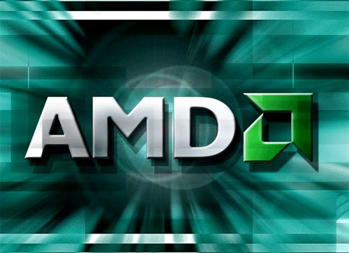
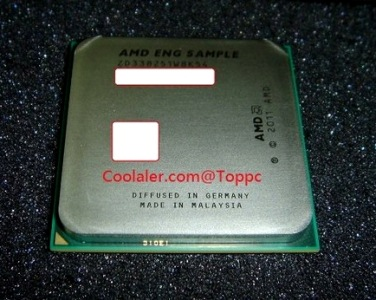
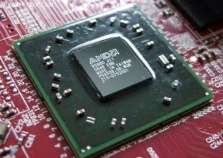

8-ядерные процессоры производства AMD: FX 8320, FX 8300 и FX 8350.

Техасский производитель процессоров и видео-акселераторов порадует любителей архитектуры Bulldozer и процессоров AMDFX на их базе.
Пользователям компьютеров построенных на платформе AM3+ вскоре будут предложены 8-ядерные процессоры, производительные, нежели чем предыдущие версии.
Это процессоры с усовершенствованной архитектурой PileDriver и будут выпущены под кодовым наименованием Vishera, посмотреть наличие можно в
интернет-магазине компьютеров.
Инновационные процессоры будут традиционно поддерживать память DDR3 и иметь на борту те же восемь мегабайт Кеш-памяти третьего уровня.
И два процессора из новых, 8-ядерных процессоров, наименованных как FX 8300 и FX 8320, будут иметь опорную тактовую частоту в три и три десятых Гигагерца,
и естественно не будут иметь ограничений на установки коэффициента умножения базовой тактовой частоты.
Отличие новых процессоров заключается в росте тактовой частоты в режиме TurboCore. И эти частоты составят следующие значения: 3,5 Гигагерца для процессора
FX 8300, а для более мощной модели процессора FX 8320 тактовая частота сможет увеличиваться до показателя в четыре Гигагерца. Соответственно и энергопотребление
у процессоров доходить будет до 95 Ватт у модели FX 8300, и у более мощного собрата - FX 8320, достигнет 125 Ватт.


Появилась информации ещё и о более инновационной модели процессора FX 8350, который будет работать на опорной частоте в четыре Гигагерца,
а в режиме TurboCore будет прибавлять ещё 5%. При этом его энергопотребление составит такую же цифру в 125 Ватт, как и у модели FX 8320.
Посмотреть наличие компьютера с таким процессором можно в Могилеве на сайте mogilev.cooler.by.
Всеже если решитесь, то лучше
купить компьютер в Могилеве.
Читайте также:
AMD или INTEL ?
Как правильно выбрать материнскую плату.
Следующая статья:
Всё о правильном выборе цифровой фоторамки.